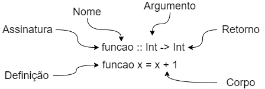

Frank Coelho de Alcantara - 2021
Frank Coelho de Alcantara
Nós aprendemos a codificar algoritmos usando programação imperativa. Neste modelo, existe uma ordem para a avaliação das declarações:
Em inglês este modelo é chamado de syntactically straightforward.
lazy evaluation, ou avaliação preguiçosa em português, é uma técnica de avaliação de expressões na qual, a expressão só é avaliada quando seu valor é necessário. Suponha que você tenha a seguinte definição:
module Main where
-- lazy evaluation
quadrado :: Int -> Int
quadrado x = x * x
main :: IO ()
main = do
print (quadrado (4+8)) -- resulta em 144
Teríamos duas formas de avaliar $quadrado (4+8)$.
| Eager | lazy |
|---|---|
|
|
Neste caso o número de operações seria aproximadamente o mesmo e o ganho computacional não fica evidente. Podemos melhorar isso usando um exemplo, um pouco mais complexo.
Considere que queremos o primeiro elemento de um par onde ambos os valores precisam ser calculados usando a nossa função quadrado, neste caso teríamos:
| Eager | lazy |
|---|---|
|
|
O custo computacional de calcular o quadrado de 2 não é necessário.
fatorial :: Int -> Int
fatorial n = fact (n,1)
fat :: (Int,Int) -> Int
fat (x,y) = if x==0 then y else fact (x-1,x*y)
main :: IO ()
main = do
print (fatorial 3)
| Eager | lazy |
|---|---|
|
|
A técnica lazy usa mais memória que a técnica eager.
lazy representa a economia de ciclos de máquina, mas implica em consumo extra de memória. A vantagem da avaliação preguiçosa aparece quando precisamos trabalhar com conjuntos de dados muito grandes, ou ilimitados.
Vamos usar por exemplo, o Crivo de Eratóstenes. Segundo a tradição, o Terceiro Mestre Bibliotecário, da Biblioteca de Alexandria, Eratóstenes, que viveu no terceiro século antes de Cristo desenvolveu um algoritmo simples para encontrar números primos. Uma versão deste algoritmo pode ser encontrada aqui.
Eratóstenes, para simplificar seus cálculos encontra a raiz quadrada inteira mais próxima do valor desejado. Cria uma lista de números, até o valor desejado e vem eliminando, desta lista, os múltiplos de todos os primos em ordem exceto o um.
Assim, eliminando os múltiplos de 2 remove todos os pares, depois elimina todos os múltiplos de 3 e segue assim até eliminar todos os múltiplos da raiz encontrada.
Contudo, podemos eliminar o cálculo da raiz e usar o mesmo processo para encontrar, por exemplo, os primeiros 100 primos.
module Main where
crivo :: [Int] -> [Int]
crivo (p : xs) = p : crivo (filter (\x -> x `mod` p /= 0) xs)
numerosPrimos n=take n $ crivo [2..]
main::IO()
main=do
print(numerosPrimos 10)
Este código está disponível aqui.
crivo (p : xs) = p : crivo (filter (\x -> x `mod` p /= 0) xs)
crivo (p : xs)
(p : xs)
crivo (filter (\x -> x `mod` p /= 0) xs)
filter (\x -> x `mod` p /= 0) xs20 minutos para você desenvolver, em Haskell uma função que devolva a lista dos $n$ primeiros Números de Armstrong.
Frank Coelho de Alcantara
Uma definição de função deve incluir: uma assinatura de tipos e a definição da função.
Tipos Primitivos:
Tipos compostos:
Sempre é uma boa prática fazer a definição dos tipos das funções antes de usar. A tupla vazia $()$ tem dois valores o próprio $()$ e o $\bot$ (undefined).
Suponha que você quer criar uma função que devolva $x$ primeiros elementos de uma lista.
devolvex :: Int->[Int]->[Int]
-- só funciona para inteiros.
devolvex2 :: Char->[Char]->[Char]
-- contudo o módulo list tem uma função take que funciona para tudo?!?!?!
take :: Int -> [a] -> [a]
Este $a$ é uma variável de tipo. Uma variável de tipos pode assumir qualquer tipo e o identificador sempre começa com uma letra minúscula. Considere:
(++) :: [a] -> [a] -> [a]
map :: (a -> b) -> [a] -> [b]
(.) :: (b -> c) -> (a -> b) -> (a -> c)
Como você implementaria o tipo do operador $(+)$? Lembre-se que podemos criar nossos próprios tipos.
Um símbolo sofre um overloading quando possui dois ou mais sentidos diferenciados pelo tipo que serão determinados em tempo de compilação ou interpretação. Esta operação faz sentido quando a metáfora representada pelo símbolo é válida em todos os dois, ou mais sentidos. O exemplo clássico é a operação de soma que pode ser aplicada a números reais, inteiros ou imaginários.
O processamento, e a estrutura de memória necessária para executar uma soma em um número inteiro, real ou imaginário é diferente para cada um destes casos e cabe ao compilador, ou interpretador, definir as regras corretas de acordo com o tipo definido dos operadores que serão usados.
O overloading também é conhecido como $ad$ $hoc$ $polymorphism$.
No Haskell usamos $parametric$ $polymorphism$.
Considere a variável de tipos $a$ com esta variável podemos definir:
funcTreco :: a -> a -> a
funcTreco x y = x && y
funcTreco 5 4
A $funcTreco$ irá dar um erro indicando que não foi possível indicar um tipo para $a$. Que relacione o operador lógico $\&\&$ com os literais inteiros $5$ e $4$. Isto ocorre porque cabe a quem chama a função definir com que tipo uma determinada função polimórfica será chamada. Uma forma melhor seria:
funcSuperTreco a b = case (typeOf a) of
Int -> a + b
Bool -> b && b
_ -> a
Ou seja, não podemos ler $a \rightarrow a \rightarrow a$ como uma promessa de que a função vai funcionar para qualquer tipo.
A solução encontrada são as classes de tipos como, por exemplo:
(+) :: Num a => a -> a -> a
Que deve ser lida como $(+)$ é do tipo $a \rightarrow a \rightarrow a$ para qualquer tipo numérico $a$. Uma classe de tipos, como é o caso da classe $Num$ contém um conjunto de métodos, como o $(+)$, que pode ser definida de forma diferente para cada instância da classe. A seta dupla $\Rightarrow$, representa a existência de uma restrição e chamamos esta restrição de contexto. Neste caso, a restrição diz que a função $(+)$ recebe dois valores do tipo $a$ e devolve um valor do tipo $a$ apenas se $a$ for da classe $Num$.
Para todo $a$ que seja uma instância da classe $Num$, então $(+)$ tem o tipo $a \rightarrow a \rightarrow a$.
Tome como exemplo, uma versão simplificada da classe $Eq$:
class Eq a where
(==) :: a -> a -> Bool
(/=) :: a -> a -> Bool
Esta definição indica que a classe $Eq$ é definida com um único parâmetro $a$. Qualquer tipo que seja instância de $Eq$ deve definir duas funções $(==)$ e $(/=)$ com as assinaturas de tipos necessárias. Por exemplo para fazer uma instância do $Eq$ para uso com o tipo $Int$ precisaríamos definir:
(==) :: Int -> Int -> Bool
(/=) :: Int -> Int -> Bool
Uma classe de tipos implementa um polimorfismo que garante que uma determinada função desta classe irá funcionar qualquer tipo escolhido desde que este tipo seja uma instância da classe em questão. O importante é notar que sempre que $(==)$, por exemplo, for usado, o compilador irá usar a inferência de tipos para definir qual a implementação de $(==)$ deve ser usado. Definir todas as funções todas as vezes é chato!
A definição da classe $Eq$ é um pouco mais complexa.
class Eq a where
(==), (/=) :: a -> a -> Bool
x == y = not (x /= y)
x /= y = not (x == y)
Isto quer dizer que quando declaramos uma função que terá tipo da classe $Eq$ podemos declarar apenas uma das funções e a outra estará devidamente declarada na própria classe. Mas ainda precisamos declarar uma das duas para evitar a recursão infinita.
Muito importante é que o compilador pode gerar instâncias automaticamente para algumas classes de tipos como as classes $Eq$, $Ord$, $Show$. Para isso usamos a função $deriving$ passando as classes desejadas como argumento.
data Coisa = F Int | G Char
deriving (Eq, Ord, Show)
Uma determinada empresa de cartão de crédito fornece cartões com números de 10 dígitos onde os oito primeiros dígitos são aleatórios mas, os dois últimos representam a soma destes 8 dígitos (checkSum).
Construa uma função que receba uma string contendo 8 dígitos e devolva uma string contendo 10 dígitos de forma que a string devolvida implemente a regra de geração dos dois últimos dígitos explicitada acima. Esta função deverá ser do tipo $Card$.
Por fim, escreva uma função que receba uma string e devolva True caso esta string represente um número de cartão válido. código.
Escreva uma função, chamada raízes, que calcule as raízes de uma equação do segundo grau na forma $ax^2+bx+c=0$.
Sua função deverá emitir um erro sempre que $ax^2$ for igual a zero e outro erro sempre que as raízes forem complexas. Esta função deverá retornar uma tupla, contendo as duas raízes reais da equação. Dica, talvez a classe $RealFloat$ ajude. Você tem 20 minutos para isso.